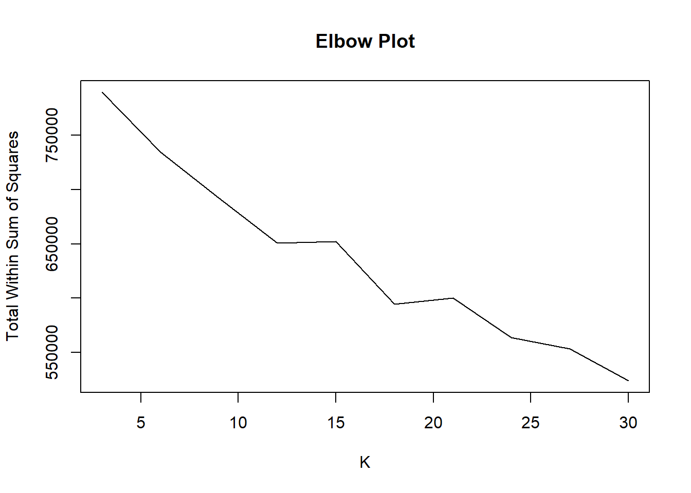

3 Modelling
3.1 initializing h2o session
h2o.init()## Connection successful!
##
## R is connected to the H2O cluster:
## H2O cluster uptime: 29 minutes 7 seconds
## H2O cluster timezone: Asia/Kolkata
## H2O data parsing timezone: UTC
## H2O cluster version: 3.32.0.1
## H2O cluster version age: 8 months and 4 days !!!
## H2O cluster name: H2O_started_from_R_varun_esn809
## H2O cluster total nodes: 1
## H2O cluster total memory: 1.55 GB
## H2O cluster total cores: 4
## H2O cluster allowed cores: 4
## H2O cluster healthy: TRUE
## H2O Connection ip: localhost
## H2O Connection port: 54321
## H2O Connection proxy: NA
## H2O Internal Security: FALSE
## H2O API Extensions: Amazon S3, Algos, AutoML, Core V3, TargetEncoder, Core V4
## R Version: R version 4.0.3 (2020-10-10)## Warning in h2o.clusterInfo():
## Your H2O cluster version is too old (8 months and 4 days)!
## Please download and install the latest version from http://h2o.ai/download/3.2 clustering based on interest
3.3 creating h2o data frame
cnames <- colnames(sns_int)
clus.hex = as.h2o(sns_int)##
|
| | 0%
|
|======================================================================| 100%3.4 K- clusters from 3 to 30
p <- seq(3,30,3)3.5 Starting with 6 cluster
mdl <- h2o.kmeans(training_frame = clus.hex,x=cnames,k=6)##
|
| | 0%
|
|======= | 10%
|
|======================================================================| 100%mdl## Model Details:
## ==============
##
## H2OClusteringModel: kmeans
## Model ID: KMeans_model_R_1623566175150_25
## Model Summary:
## number_of_rows number_of_clusters number_of_categorical_columns
## 1 23602 6 0
## number_of_iterations within_cluster_sum_of_squares total_sum_of_squares
## 1 10 738694.73682 849636.00000
## between_cluster_sum_of_squares
## 1 110941.26318
##
##
## H2OClusteringMetrics: kmeans
## ** Reported on training data. **
##
##
## Total Within SS: 738322.5
## Between SS: 111313.5
## Total SS: 849636
## Centroid Statistics:
## centroid size within_cluster_sum_of_squares
## 1 1 20850.00000 431417.91323
## 2 2 1.00000 0.00000
## 3 3 1.00000 0.00000
## 4 4 517.00000 29608.61042
## 5 5 2044.00000 267203.23027
## 6 6 189.00000 10092.702673.6 Plotting Elbow plot and finding optimum no. of K
val <- sapply(p, function(i){
mdl <- h2o.kmeans(training_frame = clus.hex,x=cnames,k=i)
h2o.tot_withinss(mdl)
})##
|
| | 0%
|
|===================== | 30%
|
|======================================================================| 100%
##
|
| | 0%
|
|===================== | 30%
|
|======================================================================| 100%
##
|
| | 0%
|
|======================================================================| 100%
##
|
| | 0%
|
|======================================================================| 100%
##
|
| | 0%
|
|======================================================================| 100%
##
|
| | 0%
|
|======================================================================| 100%
##
|
| | 0%
|
|======================================================================| 100%
##
|
| | 0%
|
|======================================================================| 100%
##
|
| | 0%
|
|======================================================================| 100%
##
|
| | 0%
|
|======================================================================| 100%plot(p,val,type = "l",main="Elbow Plot",xlab = "K",ylab = "Total Within Sum of Squares")
- Bend around K = 18
- Evaluating Clustering with h2o package and base R
3.7 Re-runing K-mean algorithm with 18 cluster
mdl18 <- h2o.kmeans(training_frame = clus.hex,x=cnames,k=18)##
|
| | 0%
|
|======================================================================| 100%mdl18## Model Details:
## ==============
##
## H2OClusteringModel: kmeans
## Model ID: KMeans_model_R_1623566175150_36
## Model Summary:
## number_of_rows number_of_clusters number_of_categorical_columns
## 1 23602 18 0
## number_of_iterations within_cluster_sum_of_squares total_sum_of_squares
## 1 10 613616.01105 849636.00000
## between_cluster_sum_of_squares
## 1 236019.98895
##
##
## H2OClusteringMetrics: kmeans
## ** Reported on training data. **
##
##
## Total Within SS: 610439.2
## Between SS: 239196.8
## Total SS: 849636
## Centroid Statistics:
## centroid size within_cluster_sum_of_squares
## 1 1 15891.00000 164834.22829
## 2 2 1.00000 0.00000
## 3 3 1.00000 0.00000
## 4 4 1.00000 0.00000
## 5 5 2.00000 666.51515
## 6 6 60.00000 19932.59158
## 7 7 189.00000 10134.45119
## 8 8 1349.00000 73169.25517
## 9 9 517.00000 18968.11824
## 10 10 292.00000 13233.86216
## 11 11 469.00000 24230.78742
## 12 12 176.00000 25261.68570
## 13 13 182.00000 9333.15162
## 14 14 331.00000 22530.19726
## 15 15 224.00000 9425.04183
## 16 16 474.00000 20559.78941
## 17 17 2706.00000 144601.74113
## 18 18 737.00000 53557.803823.7.1 With base R
- Cluster Sizes
- Within Sum of Squares
km <- kmeans(sns_int,18)
size <- km$size
wss <- km$withinsssize## [1] 296 425 1195 1 2458 758 302 472 12592 200 556 1647
## [13] 713 342 630 335 394 286wss## [1] 19878.06 17032.57 29080.80 0.00 101162.13 21262.44 12894.66
## [8] 14762.75 104656.16 11035.62 26963.43 31061.63 38568.43 35402.55
## [15] 34460.02 17137.45 15202.54 54601.873.8 Goodness of Fit
- Ratio of between Sum of Squares and Total sum of squares
- Ideally clustering that has the properties of internal cohesion and external separation, i.e. the ratio should approach 1.
h2o.betweenss(mdl18)/h2o.totss(mdl18)## [1] 0.2815285- Ratio is 0.24. Does not indicate good clustering
- With some very small cluster sizes indicates lots of outliers in different interest variables
- Also huge difference between largest and smallest cluster show, it may be large group of teens share similar interests
3.9 Cluster labelling in dataset
predictions <- h2o.predict(mdl18, clus.hex)##
|
| | 0%
|
|======================================================================| 100%sns_new$clust <- factor(as.vector(predictions))3.10 Examining proportion of females in each cluster
fprop <- sns_new %>% group_by(clust) %>% summarise(props=mean(gender_F),size=n())
fprop## # A tibble: 18 x 3
## clust props size
## * <fct> <dbl> <int>
## 1 0 0.775 15891
## 2 1 1 1
## 3 2 1 1
## 4 3 1 1
## 5 4 1 2
## 6 5 0.95 60
## 7 6 0.757 189
## 8 7 0.900 1349
## 9 8 0.994 517
## 10 9 0.822 292
## 11 10 0.772 469
## 12 11 0.773 176
## 13 12 0.736 182
## 14 13 0.779 331
## 15 14 0.223 224
## 16 15 0.905 474
## 17 16 0.932 2706
## 18 17 0.870 7373.11 Average no. of friends in each cluster
avgf <- sns_new %>% group_by(clust) %>% summarise(avgf=mean(friends),size=n())
avgf## # A tibble: 18 x 3
## clust avgf size
## * <fct> <dbl> <int>
## 1 0 28.4 15891
## 2 1 44 1
## 3 2 49 1
## 4 3 162 1
## 5 4 56.5 2
## 6 5 31.1 60
## 7 6 31.3 189
## 8 7 39.2 1349
## 9 8 40.2 517
## 10 9 34.5 292
## 11 10 32.9 469
## 12 11 32.1 176
## 13 12 32.3 182
## 14 13 33.0 331
## 15 14 31.2 224
## 16 15 35.0 474
## 17 16 37.7 2706
## 18 17 30.1 7373.12 Lets examine profile with high no. of drugs and death words
hdd <- sns_new %>% filter(death>5 | drugs>5)
hdd## gradyear_2006 gradyear_2007 gradyear_2008 gradyear_2009 gender_F gender_M
## 1: 1 0 0 0 1 0
## 2: 1 0 0 0 1 0
## 3: 1 0 0 0 1 0
## 4: 1 0 0 0 0 1
## 5: 1 0 0 0 1 0
## 6: 0 1 0 0 1 0
## 7: 0 1 0 0 1 0
## 8: 0 1 0 0 1 0
## 9: 0 1 0 0 1 0
## 10: 0 1 0 0 1 0
## 11: 0 1 0 0 1 0
## 12: 0 0 1 0 1 0
## 13: 0 0 1 0 0 1
## 14: 0 0 1 0 0 1
## 15: 0 0 1 0 1 0
## 16: 0 0 0 1 0 1
## 17: 0 0 0 1 1 0
## age friends basketball football soccer softball volleyball swimming
## 1: 18.360 8 0 0 0 0 0 0
## 2: 18.587 0 0 0 0 1 0 0
## 3: 19.502 52 0 0 0 0 0 0
## 4: 18.598 24 0 0 0 0 0 0
## 5: 18.661 14 0 0 0 0 0 0
## 6: 18.084 2 0 11 0 0 0 0
## 7: 17.440 162 0 1 0 0 0 0
## 8: 17.060 41 0 0 0 0 0 0
## 9: 17.410 43 0 1 0 0 0 0
## 10: 13.544 95 0 1 0 0 1 0
## 11: 18.119 44 0 2 0 0 0 1
## 12: 16.561 42 0 0 0 0 0 0
## 13: 16.778 5 5 0 0 0 0 0
## 14: 16.906 9 0 0 0 0 0 0
## 15: 17.166 1 0 0 0 0 0 0
## 16: 15.316 27 0 0 0 0 0 0
## 17: 15.222 46 0 1 1 0 0 0
## cheerleading baseball tennis sports cute sex sexy hot kissed dance band
## 1: 0 0 0 0 0 0 0 0 0 0 0
## 2: 0 0 0 0 1 0 0 0 0 2 0
## 3: 0 0 0 0 0 0 0 0 0 0 0
## 4: 0 0 0 2 0 1 1 0 0 0 0
## 5: 0 0 0 0 0 4 0 0 0 0 0
## 6: 6 0 0 7 8 21 1 1 9 12 7
## 7: 1 1 0 1 4 4 2 0 2 6 3
## 8: 0 0 0 0 14 6 5 0 2 1 3
## 9: 0 0 0 0 2 9 2 0 1 3 0
## 10: 0 0 0 1 0 0 0 0 0 1 0
## 11: 0 0 0 0 1 22 1 0 0 1 1
## 12: 0 0 0 0 2 0 0 0 0 2 0
## 13: 0 2 0 0 0 0 0 0 0 0 0
## 14: 0 0 0 0 2 2 0 0 1 0 0
## 15: 0 0 0 0 0 0 0 0 0 0 0
## 16: 0 0 0 0 0 1 0 0 0 0 1
## 17: 0 0 0 1 11 2 1 2 8 10 0
## marching music rock god church jesus bible hair dress blonde mall shopping
## 1: 0 0 0 0 0 0 0 0 0 0 0 0
## 2: 0 2 1 0 1 0 0 0 0 0 0 0
## 3: 0 0 0 0 0 0 0 0 0 0 0 0
## 4: 0 0 0 3 2 0 0 0 0 0 0 0
## 5: 0 1 0 1 0 0 0 6 0 1 1 0
## 6: 0 12 2 4 5 0 0 27 0 1 2 8
## 7: 1 8 3 6 1 0 1 1 1 0 2 0
## 8: 0 5 9 1 0 0 0 3 5 0 0 1
## 9: 0 0 1 3 0 0 0 3 1 0 0 0
## 10: 0 0 0 1 5 1 0 0 0 0 0 0
## 11: 0 0 1 10 0 1 0 12 2 327 0 0
## 12: 0 0 1 1 0 3 0 9 0 0 1 0
## 13: 0 2 0 2 0 0 0 9 0 0 3 0
## 14: 0 1 0 6 0 0 3 3 0 1 1 0
## 15: 0 1 0 2 0 0 0 8 0 0 3 0
## 16: 0 0 0 1 0 0 0 0 0 0 0 0
## 17: 0 1 0 6 0 0 0 8 2 0 4 1
## clothes hollister abercrombie die death drunk drugs clust
## 1: 0 0 0 3 3 0 16 17
## 2: 0 0 0 0 14 0 0 16
## 3: 0 0 0 0 9 0 0 16
## 4: 0 0 0 2 8 1 0 16
## 5: 0 0 0 6 7 0 1 6
## 6: 4 9 1 4 1 3 6 4
## 7: 0 0 1 4 0 0 7 5
## 8: 1 0 0 7 7 2 0 5
## 9: 0 0 0 9 6 0 0 6
## 10: 0 0 0 0 0 0 11 17
## 11: 1 0 0 6 6 6 0 1
## 12: 0 0 0 3 6 0 0 6
## 13: 0 0 0 3 2 3 6 17
## 14: 0 0 0 1 0 1 8 11
## 15: 0 0 0 4 0 3 6 17
## 16: 0 0 0 5 0 0 10 17
## 17: 1 0 0 3 12 0 1 5- Most of them belong to cluster 8 and 12